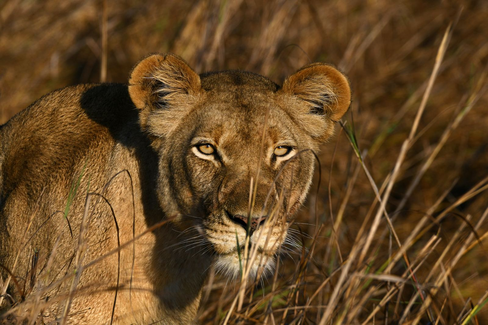

Dans les savanes d'Afrique de l'Est pousse un acacia particulier : Vachellia drepanolobium, l'acacia siffleur. Ses épines sont doublées, à la base, de renflements creux, des galles de la taille d'une bille. C'est là que vit Crematogaster mimosae, une fourmi d'à peine un centimètre.
L'arbre offre le gîte et un nectar sucré. La fourmi, en échange, fait la sécurité. Le contrat paraît anodin. Il ne l'est pas : dans cette savane, le principal client de l'acacia est l'éléphant, qui avale quatre-vingt-dix kilos de végétation par jour et raffole précisément de ces arbres.
Un adversaire de six tonnes
Un éléphant qui décide de brouter un acacia ne détruit pas seulement un repas : il anéantit une colonie entière. Il n'y a pas de match. Une fourmi d'un centimètre ne repousse pas un pachyderme.
Sauf que Crematogaster ne joue pas au même jeu. Elle vise l'endroit exact où l'éléphant est vulnérable : l'intérieur de la trompe, dense en terminaisons nerveuses. Quelques dizaines d'ouvrières qui remontent dans les naseaux suffisent à rendre le repas franchement désagréable. En renfort, elle projette de l'acide formique, irritant pour les muqueuses.
La fourmi ne gagne pas le combat. Elle rend simplement l'arbre moins appétissant que celui d'à côté.
L'arbre transformé en instrument à vent
Le plus élégant vient ensuite. En creusant les galles pour y entrer et en sortir, les fourmis percent de petits trous. Exposés au vent, ces orifices font de chaque renflement un sifflet. Quand la brise se lève, l'arbre entier se met à chanter — c'est ce qui lui vaut son nom.
Pour l'éléphant, ce sifflement devient un signal : il annonce un arbre habité, donc un repas qui pique. Les grands herbivores apprennent l'association et contournent les acacias qui sifflent. Le son ne procède d'aucune intention : c'est un sous-produit du forage, mais il fonctionne comme un panneau d'avertissement.
Ce que « personne n'a voulu ça » veut dire
Aucune fourmi ne perce un trou pour effrayer un éléphant. Chacune creuse pour circuler. C'est la répétition d'un geste individuel simple qui produit, à l'échelle de l'arbre, un dispositif de dissuasion. On retrouvera exactement ce mécanisme ailleurs sur ce site, sous le nom de stigmergie.
L'intruse
L'équilibre tient tant que Crematogaster occupe l'arbre. Depuis quelques décennies, une nouvelle venue s'installe dans la région : la fourmi à grosse tête, espèce invasive, redoutablement efficace contre les autres fourmis.
Elle attaque les colonies de Crematogaster, tue les ouvrières et dévore leur couvain. Puis elle s'installe. Mais elle a un défaut décisif du point de vue de l'arbre : elle ne le défend pas. Elle occupe la place sans honorer le contrat.
Résultat : l'acacia garde ses épines mais perd sa garde rapprochée. Éléphants et girafes peuvent brouter sans être mordus. En quelques années, sur les parcelles envahies, les acacias sont broutés, cassés, déracinés, et ne se renouvellent plus.

 Avec Crematogaster
Après l'invasion
Avec Crematogaster
Après l'invasion
Ce que le lion a à voir là-dedans
On pourrait s'arrêter là : une fourmi disparaît, des arbres disparaissent, tant pis. Sauf que la savane est aussi un dispositif de chasse.
Le lion ne court pas plus vite que le zèbre. Sa technique repose sur l'approche à couvert : il progresse derrière les buissons et les troncs jusqu'à être assez près pour bondir. Moins d'acacias, c'est moins de cachettes, donc des approches plus longues, plus visibles, et un taux d'échec qui grimpe.

Une fourmi invasive d'un demi-centimètre finit par se répercuter sur le succès de chasse du plus grand prédateur du continent.
C'est la démonstration la plus nette de ce qu'on appelle une cascade trophique : une perturbation minuscule, tout en bas de la chaîne, remonte jusqu'au sommet. Crematogaster mimosae est une pièce structurelle de l'écosystème est-africain, pas une curiosité d'entomologiste.
À retenir
L'arbre n'est pas défendu par ses épines mais par ses locataires. Le contrat passé entre un arbre et un insecte conditionne la densité du boisement, la circulation des grands herbivores, et jusqu'à la réussite des lions à la chasse. Retirez un maillon d'un centimètre : tout le reste bouge.
Sources et pistes
- Vulgarisation · documentaire sur le mutualisme acacia / Crematogaster, Laikipia (Kenya) — point de départ de cet article, pas une source primaire.
- Travaux sur les cascades trophiques liées à l'invasion de la fourmi à grosse tête en savane est-africaine.
- Voir aussi, sur ce site : la stigmergie et les espèces invasives.